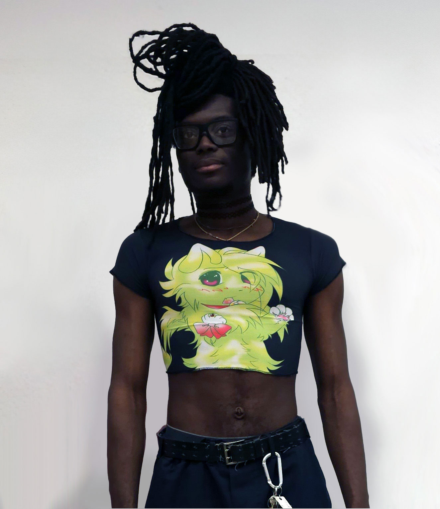

Cat Top (2023)
sublimation print on synthetic jersey fabric

Cherub Top (2024)
sublimation print on synthetic mesh shirt

Bat Skirt (2024)
plad pleated skirt with jean hipband and posable jean bat wings

Word Sweater (2024)
sublimation print on part wool, part synthetic knit